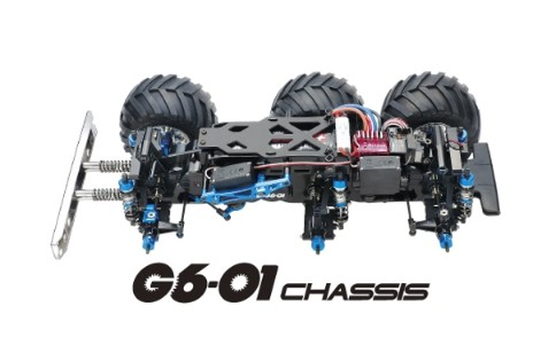

タミヤ G6-01

引用元画像：タミヤ公式サイト
📋 基本情報
| メーカー | タミヤ（Tamiya） |
|---|---|
| 機種名 | G6-01 |
| 型番 | 58646（コングヘッド6×6） |
| 発売時期 | 2017年7月15日 |
| 価格 | 21,780円（本体価格19,800円） |
| 生産状況 | 現行販売中 |
| カテゴリー | ラジコンカー（1/18スケール 電動RCカー） |
| サブカテゴリー | 6輪駆動トラック（オフロード） |
📏 シャーシスペック
| 全長 | 453mm |
|---|---|
| 全幅 | 270mm |
| 全高 | 234mm |
| ホイールベース | 173+126mm |
| トレッド | 3軸とも200mm |
| タイヤ幅/径 | 6輪とも68/113mm |
| フレーム | モノコックタイプ |
⚙️ 駆動系
| 駆動方式 | ギヤドライブ6WD（ギヤトレイン方式） |
|---|---|
| デフギヤ | 3ベベルデフ（3軸すべてに装備） |
| ギヤレシオ | 18.03:1 |
| モーター | RS540タイプ |
| ギヤボックス | フレーム一体型密閉式 |
🔧 サスペンション
| 形式 | ダブルウィッシュボーン全輪独立 |
|---|---|
| ダンパー | フリクションダンパー |
| ステアリング | 等長2分割タイロッド |
💡 特徴
ギヤトレイン6WD方式
- 3軸すべてのパワー伝達にギヤを使用
- モーターを前軸の後ろに搭載
- ギヤで前軸と第2軸に伝達、さらに第2軸から第3軸へギヤで伝達
- 抜群の駆動力を発揮
圧倒的な走破性
- 6WDならではの高い駆動力
- 長いホイールベースにより40度の急斜面を登坂可能
- 直径113mmの大径タイヤ装着
- 走る場所を選ばない高い走破性と安定性
密閉式ギヤボックス
- フレーム一体型ギヤボックス
- 砂や小石をシャットアウト
- 3軸それぞれにデフギヤ装備（スムーズなコーナリング）
4WS（四輪操舵）化可能
- サスペンションパーツの変更で4WS化可能
- 4WS対応のRCプロポで第3軸を操舵
派生モデル
- G6-01TR（ハブリダクション付き、総合減速比37.35:1）
🔧 ぽすとそに工房での修理実績
修理難易度
★★☆☆☆（ぽすとそに工房）/ ★★★☆☆（初心者）
現行販売しているため情報が豊富です。直したことも一件ある状況です。
よくある故障・注意点
- 6輪あるため、タイヤやホイールの消耗が多い
- ギヤトレイン方式のためギヤの点検が重要
- デフギヤが3つあるため整備箇所が多い
修理のポイント
- 3軸すべてのデフギヤの動作確認
- ギヤの摩耗チェック
- サスペンションの動作確認（6輪すべて）
- 密閉式ギヤボックスの状態確認
その他の特徴
- ポリカーボネート製ボディ（アメリカン・トレーラーヘッド）
- クロームメッキ仕上げのディープリムホイール
- 6本のビッグタイヤが砂煙を上げて走る圧倒的な迫力